Lessons learned from a failed microservice rewrite
Dan Čermák
who -uDan Čermák
| Open Source Advocate @SUSE | |
| Package maintainer | |
| Developer Tools, Home Automation, Testing and Documentation | |
| https://dancermak.name | |
| @Defolos@mastodon.social | |
| @defolos.bsky.social | |
| Find me on LinkedIn |
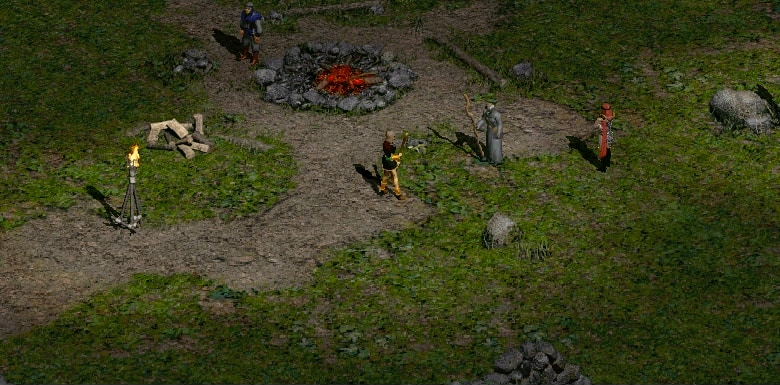
To the story of the cve-patch-checker
cve-patch-checker
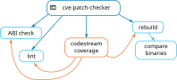
🤔 we have a Kubernetes cluster at our disposal
Microservices it is!
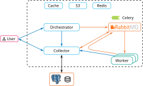
And then we deployed it 🫠
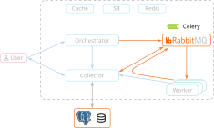
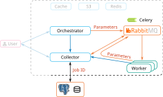
$ kubectl logs -n cve worker-1234
2024-10-23 09:41:02,318 INFO [worker.runner] Starting check 8f6c2b91-44de-4a03-bf11-c279e05d73a8
2024-10-23 09:41:02,325 INFO [checks.coverage] Checking CVE-2024-1842 for SLE15-SP6
2024-10-23 09:41:03,741 DEBUG [checks.coverage] Found 4 affected code streams
2024-10-23 09:41:04,112 INFO [checks.coverage] Missing verification for openssl on SLE15-SP5
2024-10-23 09:41:04,118 INFO [worker.scheduler] Scheduling binary_impact_check
2024-10-23 09:41:04,123 INFO [worker.scheduler] Next check: b47a9e21-7d36-49cb-8e54-c31802ad6f90
2024-10-23 09:41:04,139 INFO [worker.scheduler] Task published to RabbitMQ
2024-10-23 09:41:04,156 INFO [checks.coverage] Coverage check completed
2024-10-23 09:41:04,201 INFO [worker.runner] Check 8f6c2b91-44de-4a03-bf11-c279e05d73a8 succeeded
2024-10-23 09:41:04,216 INFO [worker.runner] Starting check d31c5f82-61b0-4c95-9e27-f8a2136b40dd
2024-10-23 09:41:04,221 INFO [checks.lint] Validating patch metadata
2024-10-23 09:41:05,034 WARNING [checks.lint] Missing upstream commit reference
2024-10-23 09:41:05,052 INFO [worker.runner] Check d31c5f82-61b0-4c95-9e27-f8a2136b40dd completed
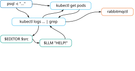
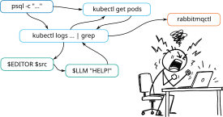
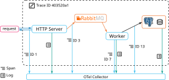
but observability ≠ reliability
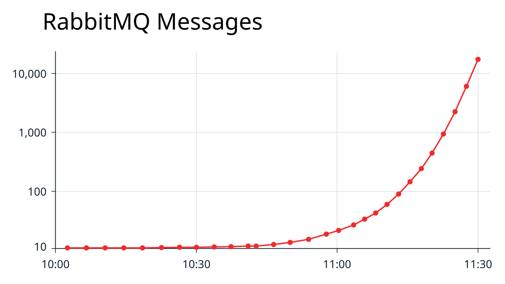
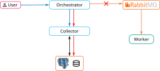
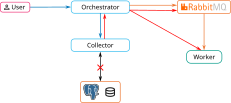
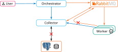
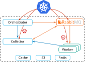
k8s can stop your pod at any moment
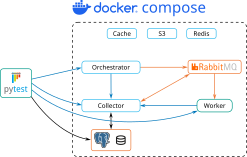
Test for the unhappy path too!
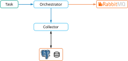
If you can avoid a failure situation, do that!
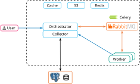
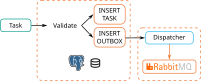
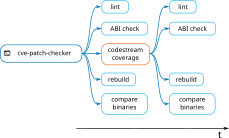
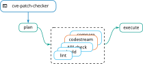
Distributed systems are hard
You are not Google
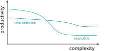
You shouldn't start a new project with microservices, even if you're sure your application will be big enough to make it worthwhile
No, the story is a fake
But the failures are real